用 AI Agent 还原 Fate 系列的核心幻想：英灵不再是执行指令的游戏角色，而是 由 AI 从你的一件旧物中现场生成、有人格、有目的、会自主行动的搭档。 你以 Master 的身份第一人称置身战争——找到与他合作的方式，与他配合，赢下圣杯。
二十年来，历代 Fate 游戏都把英灵做成了卡池里的单位和指令的执行器。 "英灵是活人"这件事，agent 技术第一次让它成为可能。
Reference Video
原作的例子：三流学徒 Waver 的召唤。决定"谁会回应你"的不是术者的资历，而是圣遗物与英灵之间的深层联系。
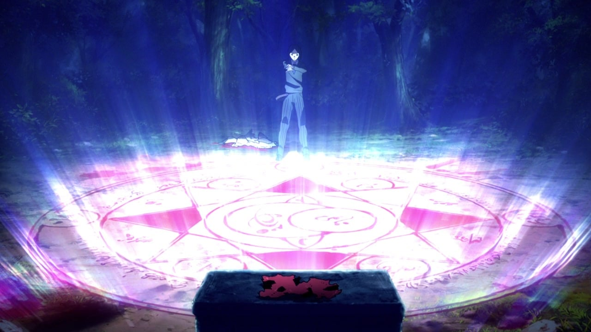
原作 · Fate/Zero他手里只有一小块偷来的斗篷碎片——一件不起眼的旧物，和一个照着书画的法阵。
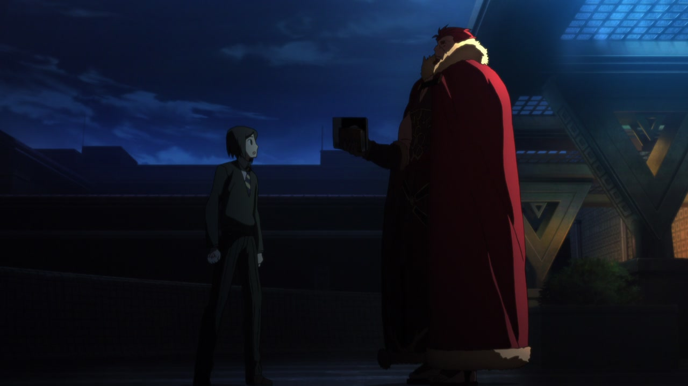
原作 · Fate/Zero应召而来的，是征服王 Iskandar 本人——斗篷的主人。圣遗物的来历，决定了英灵是谁。
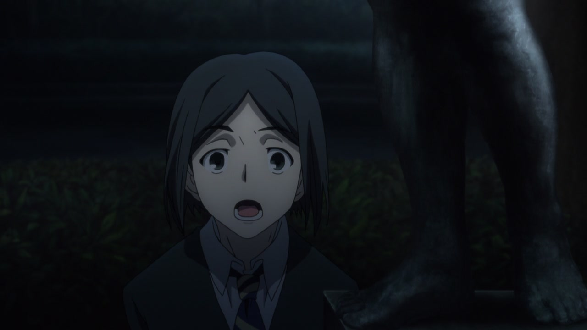
原作 · Fate/Zero召唤的终点不是"获得一个单位"——是一个人睁开眼，居高临下地打量你。
一件旧物 → 一位活生生的英灵。这份因果，是召唤仪式全部的重量
原作的例子：征服王与现代世界。英灵的性格不是设定文案，是他自己的兴趣、执念和做出来的举动。
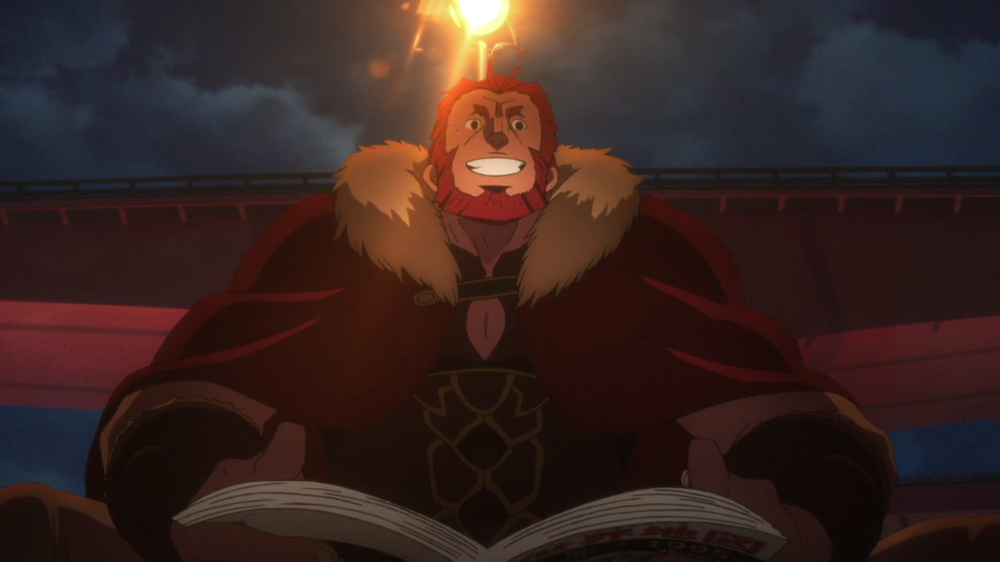
原作 · Fate/Zero召唤当夜，征服王要的第一样东西不是敌情，而是一张世界地图——"这个时代的世界，原来这么大。"
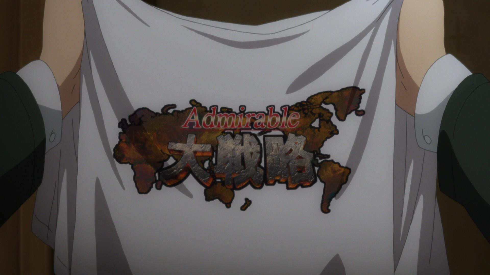
原作 · Fate/Zero白天，他自作主张买回一件印着世界地图的 T 恤穿在身上，理直气壮。
夜里，他霸占着 Waver 的电视，痴迷现代战略游戏——征服世界，从了解这个时代开始。
两千年前的眼睛打量现代的一切——每一个反应都长在"征服王"这个人格上。性格不靠台词解释，靠举动自证
原作的例子：未远川的首夜遭遇战。英灵有自己的愿望、准则与判断——他们参战，是为了自己的理由。
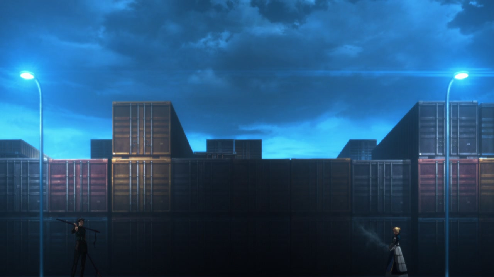
原作 · Fate/Zero首夜，两位从者狭路相逢。互不知对方真名——报上职阶，亮出兵器，仪式般地开战。
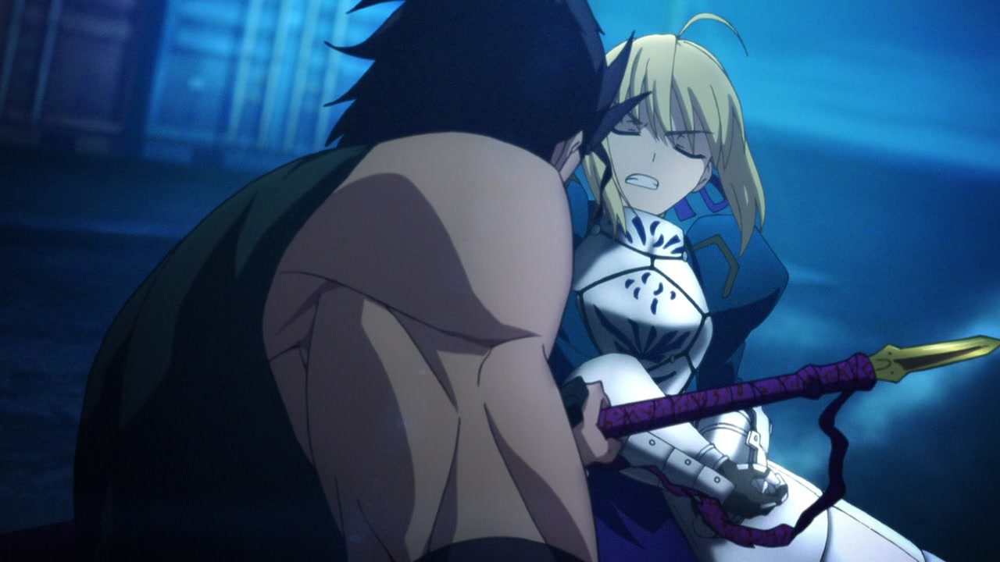
原作 · Fate/Zero交手即是试探：藏住宝具、掂量对手、点到即止。每一个战斗判断都出自英灵自己，没有一句 Master 的指令。
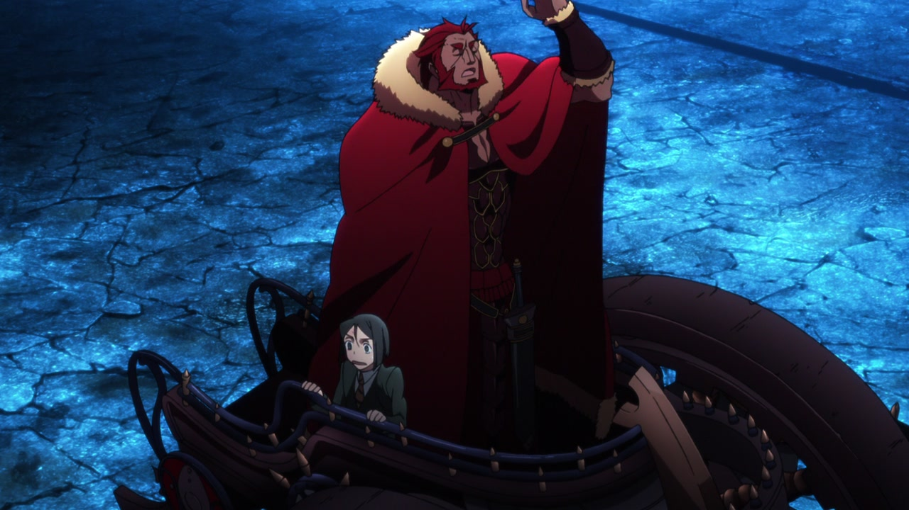
原作 · Fate/Zero雷鸣中，征服王驾着战车不请自来，当众自报真名，邀两位对手共谋圣杯——没有人命令他来，这是他自己的打法。
战场上的每一个选择——试探、隐藏、收手、乱入——都是英灵自己的意志。Master 往往是事后才知道昨夜发生了什么
原作的例子（反面教材）：切嗣与 Saber。同一纸契约，因为拒绝交流，走到了最坏的结局。
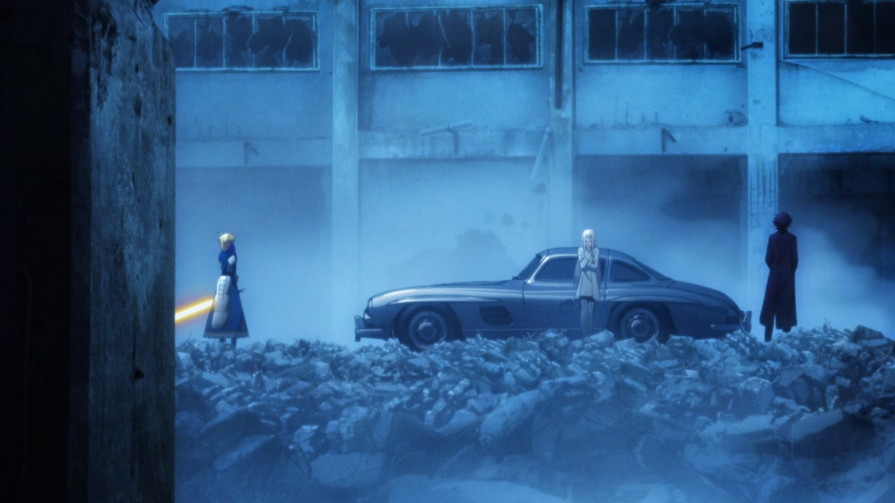
原作 · Fate/Zero切嗣把 Saber 当武器使用，自始至终拒绝与她对话——战术不解释，理念不交流。
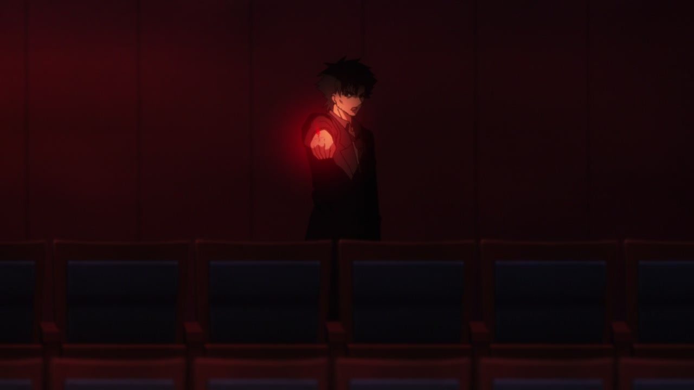
原作 · Fate/Zero最后关头，他没有解释一个字，直接用两道令咒强制她执行自己无法理解的命令。
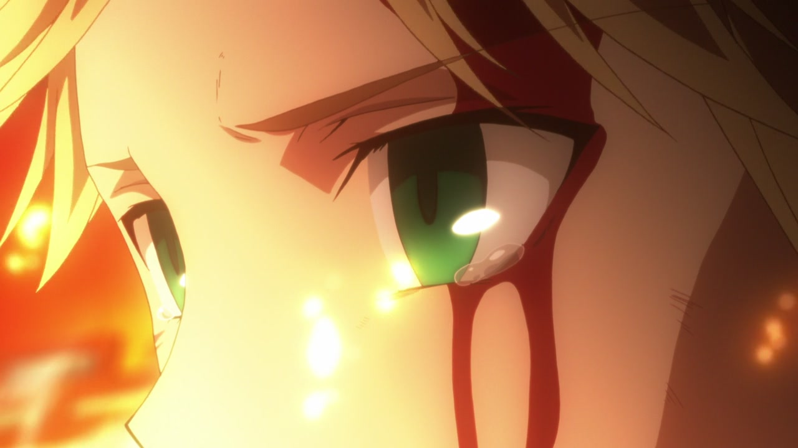
原作 · Fate/Zero骑士王含着泪举起了圣剑——她到最后也不明白，自己的 Master 为什么这样做。
圣杯在她剑下焚毁。这对从未交流过的搭档，以跨越作品的怨恨收场。
强制可以赢得服从，赢不来配合。而另一对搭档，给出了完全相反的答案——见下一章
原作的例子（正面答案）：Waver 与 Iskandar。Master 不是遥控指挥官——并肩，是字面意义的。
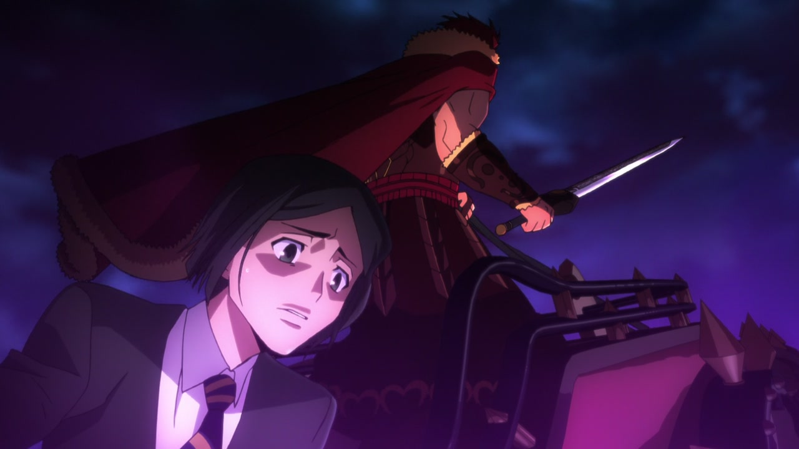
原作 · Fate/ZeroWaver 没有留在安全的后方——他被王一把拉上牛车，在雷鸣的车轮上与征服王一同冲锋。王要他看清战争，也要他分担战争。
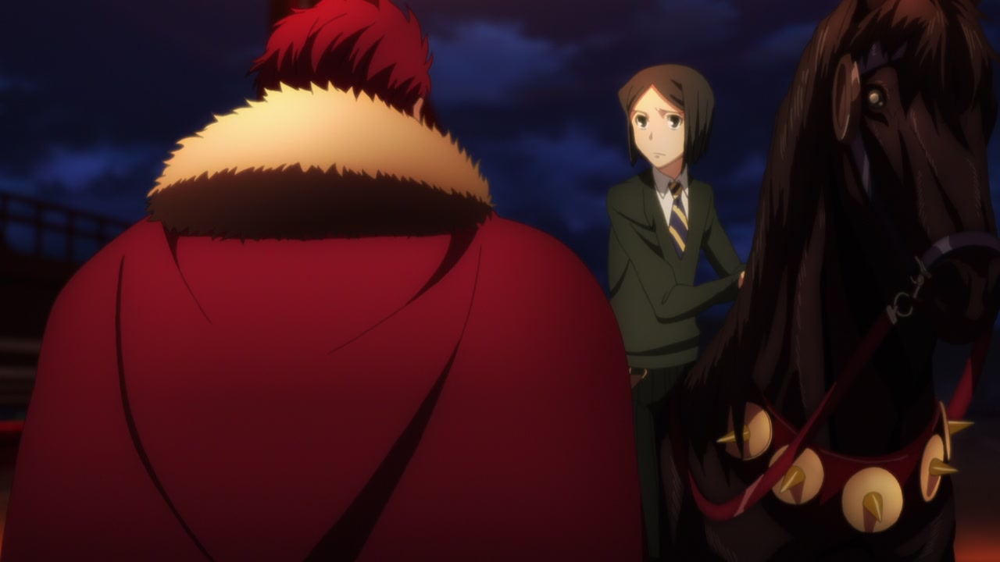
原作 · Fate/Zero决战之前，少年在战车上单膝跪地宣誓为臣——被拒绝过、被反问过的他，赢得了王的承认。
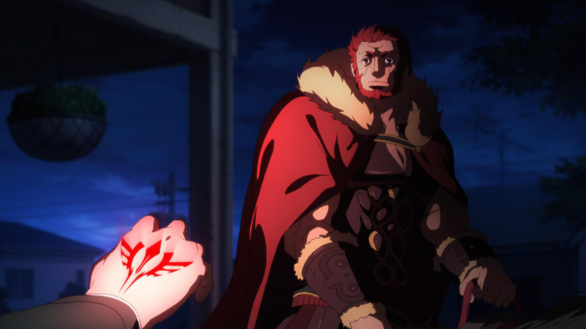
原作 · Fate/Zero他用尽最后的令咒，下的命令是"去赢"——同一个强制工具，在信任的关系里成了托付的印章。
同样的令咒：切嗣用它摧毁了关系，Waver 用它完成了托付。配合的质量，就是这场战争真正的胜负手
The War Is Real
同一座城市里，其他 Master 也是真人玩家——各自的圣遗物、各自独一无二的英灵、各自摸索出来的配合方式。你们在同一场战争里相遇。
与现实世界的时间同步、在另一个世界时刻进行着的、真实的圣杯战争。
召唤英灵，建立羁绊，找到与他并肩的方式——赢下圣杯。